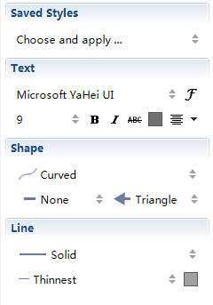

関連
2 つのトピックが関連を持っている場合は、XMind ではそれらがリンクしている線で関連を示すことができます。
関連の追加:- トピックまたは囲みを選択します。
- 関連を作成するには 4 つの方法があります。
- ツールバーの関連アイコンをクリックします。
- メニューから[挿入]→[関連]を選択します。
- ショートカットの ' Ctrl + L' (Macでは Command + L)を押します。
- マウスを右クリックし、コンテキスト メニューから[挿入]→[関連]を選択します。
- 関連先となるトピックまたは囲みをクリックします。
- 線の中央をダブルクリックして、関連の説明をキストボックスに入力します。
関連プロパティの変更:
- 関連を選択し、プロパティビューを開きます。
- その後、関連の形状、スタイル、色、テキストのフォント サイズや色などを変更できます。

注:
- 2 つのトピックの間、2 つの囲みの間、トピックと囲みの間に、関連を作成できます。
- トピックまたは囲みは、複数の関連を設定ができます。